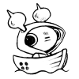
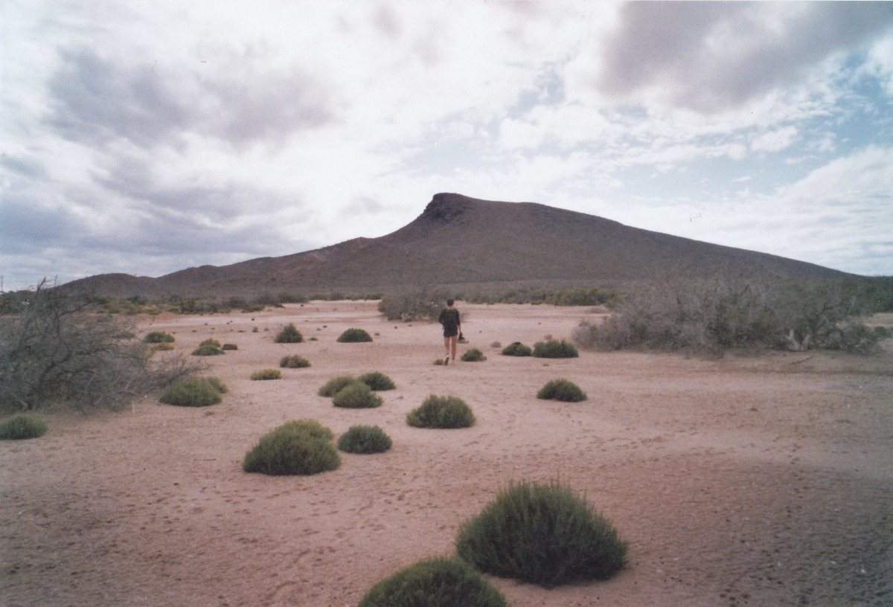

About
About Projects
Projects Games
Games Stories
Stories Store
Store Hobby
Hobby Notes
Notes How-to
How-to
Hundred Rabbits is a small artist collective that formed in 2016, made up of my partner Devine and myself. Together, we document low-tech solutions with the hope of building a more resilient future. We live and work aboard a 10 m sailboat named pino in remote parts of the world to learn more about how technology degrades beyond the shores of the western world.
Visit 100r.ca.
 We founded Hundred Rabbits so we could dedicate our time to the creation of small, playful, free, open-source software, while considering the impact of our works on the environment, and optimizing toward living more sustainably. We've adapted our software and projects around the limitations of our vessel instead of increasing its limits. We learned to appreciate these limits and think that they make our work better.
We founded Hundred Rabbits so we could dedicate our time to the creation of small, playful, free, open-source software, while considering the impact of our works on the environment, and optimizing toward living more sustainably. We've adapted our software and projects around the limitations of our vessel instead of increasing its limits. We learned to appreciate these limits and think that they make our work better.
We want our work to be an equal blend of aesthetics, playfulness, and practicality. We aim to keep our software small, portable and build from first principles to keep them participatory.
The name Hundred Rabbits comes from the name of the sailboat in the animated show Ergo proxy, while the sailboat's name Pino comes from the android sailor aboard the sailboat from that same show.
Since 2016, we have sailed from Canada, the US West coast, down to Mexico, over to French Polynesia, Cook Islands, Niue, Tonga, New Zealand, Fiji, The Marshall Islands, all the way to Japan and then back again to Canada. We then explored B.C's Northern Coast and went on to visit Southeast Alaska.
Timeline
- 2016: Bought Pino, moved aboard. Sailed down the US west coast and down to Mexico.
- 2017: Sailed to French Polynesia, the Cook Islands, Niue, Tonga and New Zealand.
- 2018: Stayed in New Zealand until June, then left for Fiji. After that, sailed north to the Marshall Islands.
- 2019: Sailed to Chichijima, then to mainland Japan in March. Stayed in Japan until August, then left Pino in Minamiise and flew to Montreal for 6 months.
- 2020: Returned to Japan, sailed to Shimoda, then sailed back across to Canada, arriving in late July.
- 2021: Sailed around the Salish sea.
- 2022: Went to Desolation Sound for the first time.
- 2023: Went to Princess Louisa Inlet and the Octopus Islands.
- 2024: Sailed up the B.C. north coast and over to Southeast Alaska. We sailed to Sitka, and then back down.
- 2025: Sailed to the San Juan Island and Ucluelet on the west coast of Vancouver Island.